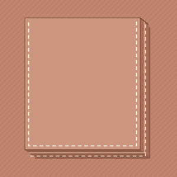
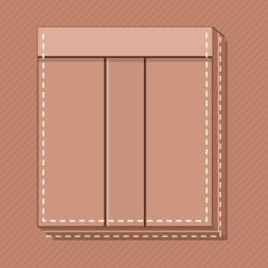

Poches plaquées et passepoilées
Choisissez votre modèle, du plus simple au plus élaboré. Les poches plaquées se cousent sur le vêtement : ce sont les poches à soufflet des sahariennes et des pantalons cargo. La poche passepoilée se coud dans une fente : seule l’ouverture se voit. Toutes peuvent se coudre sur un vêtement existant.
Poches plaquées
Les menus des options de base sont les mêmes pour tous les modèles : dimensions, forme du bas, rempli, revers, rabat et marge de couture. L’entrée de la poche peut être droite ou inclinée (biseau).

Poche simple
Sans soufflet : la plus rapide à réaliser.
Difficulté●○○○
Créer le patron

Soufflets latéraux
Deux plis sur les côtés pour agrandir la poche. En standard ou en une pièce.
Difficulté●●○○
Créer le patron

Soufflet central
Un pli au centre de la face, extérieur ou intérieur, avec revers ajouté.
Difficulté●●○○
Créer le patron

Double soufflet
Soufflets latéraux et pli central réunis, en standard ou rapportés.
Difficulté●●●○
Créer le patron
Poche passepoilée

Quelle poche choisir ? Le guide des noms et des usages
Trouvez la poche qui correspond à votre vêtement, ou retrouvez-la par le nom que vous lui donnez
| Ce que l’on cherche | Notre patron |
|---|---|
| poche plaquée, poche appliquée, poche rapportée, poche de chemise, poche poitrine, poche de tablier, poche arrière de jean | Poche simple |
| poche cargo, poche militaire, poche treillis, poche de combat, poche utilitaire, poche workwear, poche à soufflet, poche accordéon, poche 3D | Poche à soufflets latéraux |
| poche à pli, poche à pli creux, poche à pli plat, poche à pli central, poche safari, poche saharienne | Poche à soufflet central |
| poche à soufflet et pli, poche cargo à pli, poche de veste de terrain | Poche à double soufflet |
| poche à rabat, rabat de poche, poche boutonnée, poche à patte | Rabats (poches plaquées) · Poche passepoilée, un passepoil avec rabat |
| poche passepoilée, poche à passepoil, poche à double passepoil, poche boutonnière, poche passepoilée à rabat, poche de costume, poche de veste, poche intérieure de veste | Poche passepoilée |
| poche passepoilée simple, poche à une lèvre, poche poitrine passepoilée | Poche passepoilée, un passepoil |
| poche fendue, poche à fente, poche parementée | Poche passepoilée, poche fendue |
| poche verticale, poche inclinée, poche en biais | Poche passepoilée (angle réglable) · entrée biseautée des poches plaquées |
| poche de manche, poche de bras | Poche simple, poche à soufflet central |
| Ce que vous cousez | Poches qui conviennent |
|---|---|
| Chemise, chemisier, surchemise | poche simple, poche à soufflet central |
| Veste, blouson, saharienne, veste de travail | poche à soufflets latéraux, poche à double soufflet, poche à soufflet central à rabat, poche passepoilée (double, un passepoil, un passepoil avec rabat) |
| Veste de costume, blazer | poche passepoilée : double passepoil, un passepoil (poitrine), un passepoil avec rabat ou poche fendue avec rabat (poches basses) |
| Manteau, parka | poche à soufflets latéraux, poche à double soufflet, poche passepoilée inclinée ou verticale |
| Intérieur de veste ou de manteau doublé | poche passepoilée, double passepoil |
| Pantalon, bermuda, short (cuisse, cargo) | poche à soufflets latéraux, poche à double soufflet |
| Pantalon, jupe (arrière) | poche simple, poche passepoilée (double ou un passepoil), poche fendue |
| Robe, jupe, tablier | poche simple, poche passepoilée, poche fendue |
| Sac, cabas, trousse | poche simple, poche à soufflets latéraux, poche fendue (poche intérieure) |
| Vêtement d’enfant | poche simple, en petites dimensions |
| Manche | poche simple, poche à soufflet central |